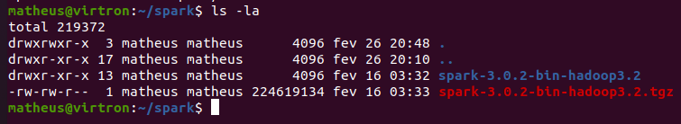
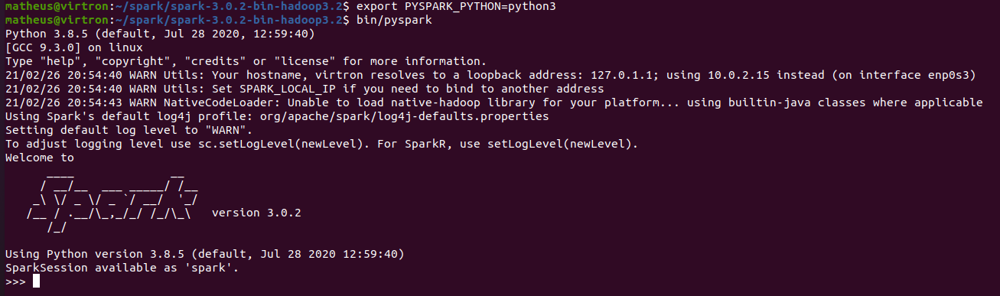
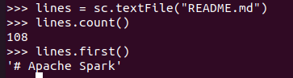
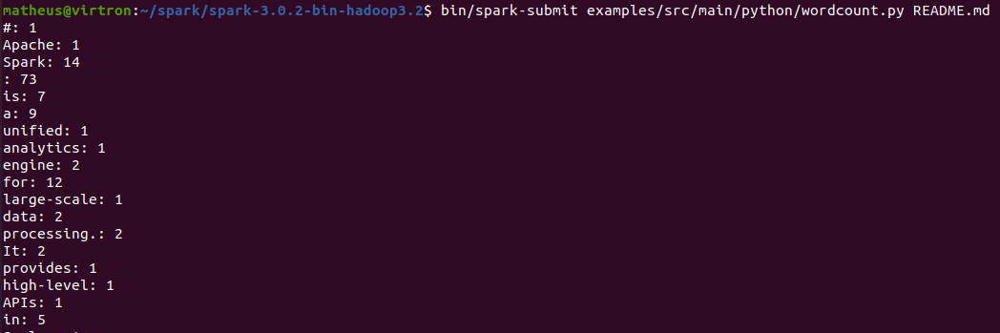
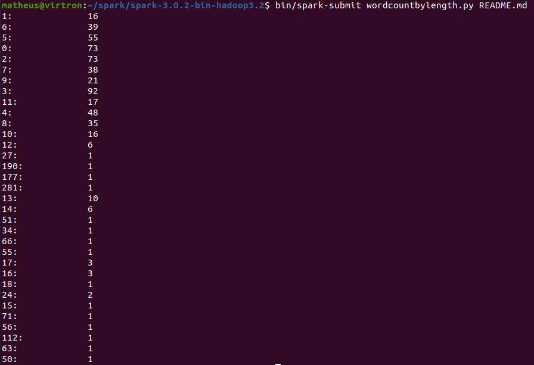
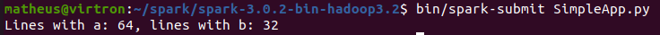
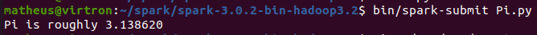
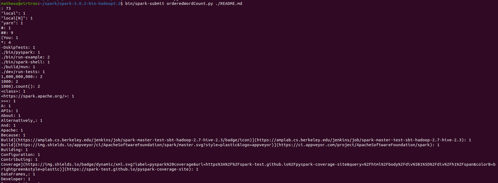

A instalação foi feita em um ambiente linux usando o Ubuntu 20.04
wget https://downloads.apache.org/spark/spark-3.0.2/spark-3.0.2-bin-hadoop3.2.tgz tar zvfx spark-3.0.2-bin-hadoop3.2.tgz

export PYSPARK_PYTHON=python3 bin/pyspark

lines = sc.textFile("README.md") lines.count() lines.first()

Criar um arquivo com o seguinte código em python.
from pyspark import SparkConf, SparkContext if __name__ == "__main__": conf = SparkConf().setMaster("local").setAppName("My App") sc = SparkContext(conf = conf) print("ops, sc: %s" % sc)
Para testar pode ser usado o spark submit da seguinte forma
$SPARK_HOME/bin/spark-submit $EXAMPLE_HOME/watch-context.py
bin/spark-submit examples/src/main/python/wordcount.py README.md

Segue código adaptado para resolução do exercicio.
from __future__ import print_function import sys from operator import add from pyspark.sql import SparkSession if __name__ == "__main__": if len(sys.argv) != 2: print("Usage: wordcount <file>", file=sys.stderr) sys.exit(-1) spark = SparkSession\ .builder\ .appName("PythonWordCount")\ .getOrCreate() lines = spark.read.text(sys.argv[1]).rdd.map(lambda r: r[0]) counts = lines.flatMap(lambda x: x.split(' ')) \ .map(lambda x: (x, 1)) \ .reduceByKey(add) output = counts.collect() #################################################################################################### # # CODIGO ALTERADO A PARTIR DESSE PONTO PARA RESOLUCAO # #################################################################################################### #print(output) wordcountbylength = dict() for (word, count) in output: # pega o comprimento da palavra length = len(word) # verifica se uma entrada para palavras com esse comprimento ja foi criado # se existir entao soma o valor de palavras aos valores ja existentes if length in wordcountbylength: wordcountbylength[length] = wordcountbylength[length] + count else: # se nao cria um novo para de chave e valor wordcountbylength[length] = count # print do numero de palavras por comprimento for comprimento, quantidade in wordcountbylength.items(): print(f'{comprimento}:\t\t{quantidade}') spark.stop()
Execução e resultado
bin/spark-submit wordcountbylength.py README.md

# "SimpleApp.py" import os #print(os.environ['HOME']) from pyspark.sql import SparkSession logFile = os.environ['SPARK_HOME'] + "/README.md" spark = SparkSession.builder.appName("SimpleApp").getOrCreate() logData = spark.read.text(logFile).cache() numAs = logData.filter(logData.value.contains('a')).count() numBs = logData.filter(logData.value.contains('b')).count() print("Lines with a: %i, lines with b: %i" % (numAs, numBs)) spark.stop()

from __future__ import print_function import sys from random import random from operator import add from pyspark.sql import SparkSession spark = SparkSession\ .builder\ .appName("PythonPi")\ .getOrCreate() partitions = int(sys.argv[1]) if len(sys.argv) > 1 else 2 n = 100000 * partitions def f(_): x = random() * 2 - 1 y = random() * 2 - 1 return 1 if x ** 2 + y ** 2 <= 1 else 0 count = spark.sparkContext.parallelize(range(1, n + 1), partitions).map(f).reduce(add) print("Pi is roughly %f" % (4.0 * count / n)) spark.stop()

from __future__ import print_function import sys from operator import add from pyspark.sql import SparkSession if len(sys.argv) != 2: print("Usage: wordcount <file>", file=sys.stderr) sys.exit(-1) spark = SparkSession\ .builder\ .appName("PythonWordCount")\ .getOrCreate() lines = spark.read.text(sys.argv[1]).rdd.map(lambda r: r[0]) counts = lines.flatMap(lambda x: x.split(' ')) \ .map(lambda x: (x, 1)) \ .reduceByKey(add) outputSorted = counts.sortByKey().collect() for (word, count) in outputSorted: print("%s: %i" % (word, count)) spark.stop()
